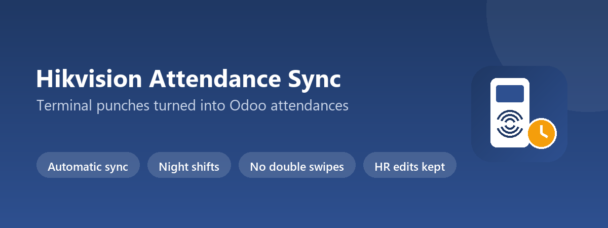

Download punches from your Hikvision access-control and time-attendance terminals and turn them into Odoo attendances.
Connect your Hikvision terminals over the local network or a VPN. Odoo downloads new punches every few minutes, matches each one to the employee by their ID on the device, and builds check-ins and check-outs. Night shifts and double swipes are handled, and corrections made by HR are never overwritten.
🔄 Automatic downloadNew punches are downloaded on the schedule you set, or at once with Sync Now, always from where the last download stopped. |
👤 Employee matchingEach punch is booked on the employee whose Hikvision User ID matches the number on the device; earlier punches are processed once the ID is entered. |
🌙 Night shiftsA check-out is accepted across midnight, up to the maximum shift length you set. |
👆 Double swipes ignoredA second read within a few minutes of the previous one is skipped, with a threshold you choose. |
✍ HR edits respectedAttendances HR created or corrected are never changed; conflicting punches go to a review list with the reason. |
🔍 Punch listEvery downloaded punch is listed with its result: processed, double swipe, not mapped or to review. |
Odoo 18.0 • Community & Enterprise • depends on Attendances • Licence LGPL-3
Odoo implementation and development. thecodelegion.com